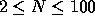

| Factors and Factorials |
The factorial of a number N (written N!) is defined as the product of all the integers from 1 to N. It is often defined recursively as follows:
Factorials grow very rapidly--5! = 120, 10! = 3,628,800. One way of specifying such large numbers is by specifying the number of times each prime number occurs in it, thus 825 could be specified as (0 1 2 0 1) meaning no twos, 1 three, 2 fives, no sevens and 1 eleven.
Write a program that will read in a number N (  ) and write out its factorial in terms of the numbers of the primes it contains.
Input will consist of a series of lines, each line containing a single integer N. The file will be terminated by a line consisting of a single 0.
Output will consist of a series of blocks of lines, one block for each line of the input. Each block will start with the number N, right justified in a field of width 3, and the characters `!', space, and `='. This will be followed by a list of the number of times each prime number occurs in N!.
These should be right justified in fields of width 3 and each line (except the last of a block, which may be shorter) should contain fifteen numbers. Any lines after the first should be indented. Follow the layout of the example shown below exactly.
5 53 0
5! = 3 1 1
53! = 49 23 12 8 4 4 3 2 2 1 1 1 1 1 1
1